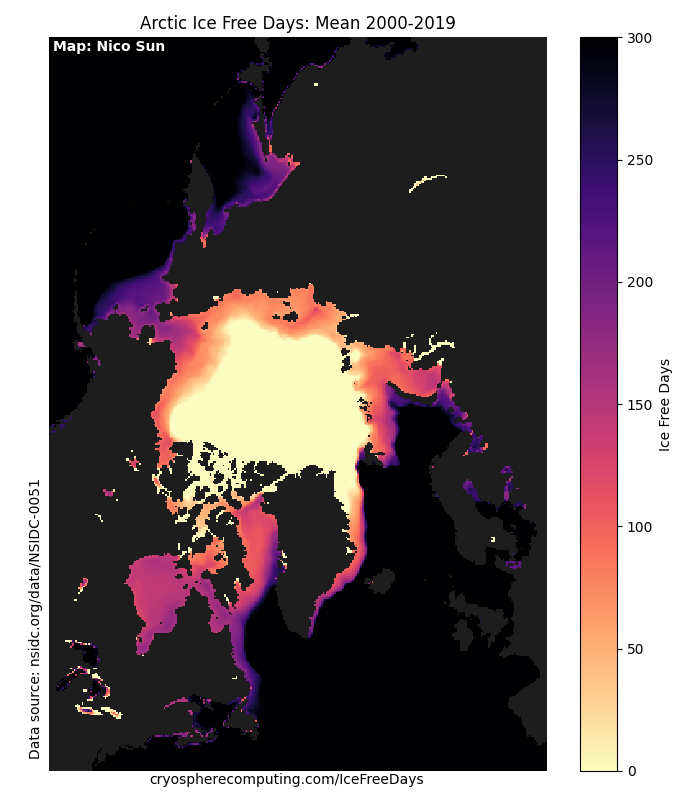

Arctic and Antarctic Ice Free Days
Total number of days a gridcell is icefree

Select individual years with the slider to view the difference with the long term mean. Ice Free is defined as having an ice concentration below 15%. The baseline for anomaly calculation is 1979-2019
Data used
Cavalieri, D. J., C. L. Parkinson, P. Gloersen, and H. J. Zwally. 1996, updated yearly. Sea Ice Concentrations from Nimbus-7 SMMR and DMSP SSM/I-SSMIS Passive Microwave Data, Version 1.1 Boulder, Colorado USA. NASA National Snow and Ice Data Center Distributed Active Archive Center. doi: https://doi.org/10.5067/8GQ8LZQVL0VL.